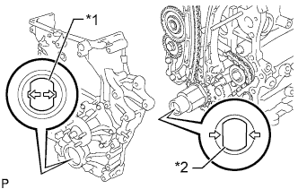
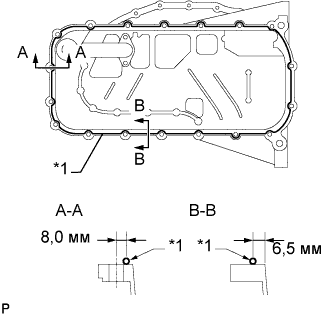
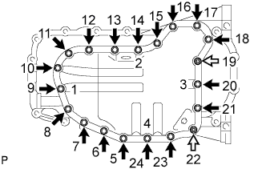
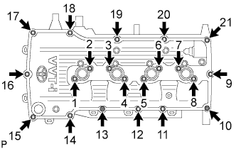
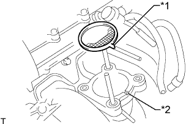

МАСЛЯНЫЙ НАСОС > УСТАНОВКА |
| 1. УСТАНОВИТЕ НАСОС СИСТЕМЫ ОХЛАЖДЕНИЯ В СБОРЕ |
Установите новую прокладку и закрепите насос системы охлаждения 8 болтами.
| 2. УСТАНОВИТЕ КРЫШКУ ЦЕПНОГО ПРИВОДА ГАЗОРАСПРЕДЕЛИТЕЛЬНОГО МЕХАНИЗМА В СБОРЕ |
 |
Установите 3 новых кольцевых уплотнения в крышку цепного привода газораспределительного механизма, как показано на рисунке.
| *1 | Новое кольцевое уплотнение насоса системы охлаждения |
| *2 | Новое верхнее кольцевое уплотнение насоса системы охлаждения |
| *3 | Новое кольцевое уплотнение масляного насоса |
|  |
Совместите шлицы ведущей шестерни масляного насоса и ведущего зубчатого колеса коленчатого вала, как показано на рисунке.
| *1 | Шлицы ведущей шестерни |
| *2 | Ведущая шестерня привода газораспределения |
Нанесите герметик в виде сплошного валика на крышку цепного привода газораспределительного механизма, как показано на рисунке.
| Область | Диаметр валика герметика | Расстояние от кромки крышки до центра валика герметика | Длина участка нанесения герметика | Выступание из головки блока цилиндров |
| A-A (зона, отмеченная пунктирной линией) | 2,5 - 4,0 мм (0,0984 - 0,157 дюйма) | 2,0 мм (0,0787 дюйма) | - | - |
| B-B (зона, отмеченная непрерывной линией) | Ширина 10 - 14 мм (0,394 - 0,551 дюйма), толщина 2,5 - 4,0 мм (0,0984 - 0,157 дюйма) | 6,0 мм (0,236 дюйма) | 46 мм (1,81 дюйма) от верхнего края болтового отверстия | - |
| C-C (зона, отмеченная непрерывной линией) | Ширина 10 - 14 мм (0,394 - 0,551 дюйма), толщина 2,5 - 4,0 мм (0,0984 - 0,157 дюйма) | 6,0 мм (0,236 дюйма) | 54 мм (2,13 дюйма) от верхнего края болтового отверстия | - |
| D-D (зона, отмеченная непрерывной линией) | Ширина 9,0 - 13 мм (0,354 - 0,512 дюйма) толщина 2,5 - 4,0 мм (0,0984 - 0,157 дюйма) | - | 13 мм (0,512 дюйма) от верхнего края болтового отверстия | - |
| E-E (зона, отмеченная непрерывной линией) | Ширина 9,0 - 13 мм (0,354 - 0,512 дюйма) толщина 2,5 - 4,0 мм (0,0984 - 0,157 дюйма) | - | 13 мм (0,512 дюйма) от верхнего края болтового отверстия | - |
| I - I (зона, отмеченная непрерывной линией) | 8,0 мм (0,315 дюйма) | - | 56,5 мм (2,22 дюйма) от нижней части головки блока цилиндров | 2,0–3,0 мм (0,0787–0,118 дюйма) |
| J | 10 мм (0,394 дюйма) | - | 20 мм (0,787 дюйма) | - |
| *1 | Головка блока цилиндров | *2 | Блок цилиндров |
| *3 | Герметик | *4 | Толщина слоя герметика |
| *5 | Ширина слоя герметика | *6 | Выступ |
Временно закрепите крышку цепного привода газораспределительного механизма 19 болтами и 2 гайками.
| Параметр / Устройство | Длина | Диаметр резьбы |
| Болт A | 75 мм (2,95 дюйма) | 10 мм (0,394 дюйма) |
| Болт B | 75 мм (2,95 дюйма) | 8 мм (0,315 дюйма) |
| Болт C | 90 мм (3,54 дюйма) | 8 мм (0,315 дюйма) |
| Болт D | 95 мм (3,74 дюйма) | 8 мм (0,315 дюйма) |
| Болт E | 35 мм (1,38 дюйма) | 8 мм (0,315 дюйма) |
| Болт F | 75 мм (2,95 дюйма) | 10 мм (0,394 дюйма) |
Затяните болты и гайки, за исключением болтов A и F, в следующем порядке: зона 1, зона 3, зона 2.
| *1 | Зона 1 | *2 | Зона 2 |
| *3 | Зона 3 | *4 | Зона 4 |
| *5 | Гайка | - | - |
Затяните болты A в следующем порядке: Зона 2 и зона 3.
Затяните болты F.
Затяните болты E в зоне 4.
| 3. УСТАНОВИТЕ НАТЯЖИТЕЛЬ ПОЛИКЛИНОВОГО РЕМНЯ В СБОРЕ |
 |
Установите натяжитель ремня и временно закрепите его 3 болтами.
Установите натяжитель и закрепите его 3 болтами, затянув их в последовательности, указанной на рисунке.
| 4. УСТАНОВИТЕ ПОДДОН КАРТЕРА В СБОРЕ |
Установите новое уплотнительное кольцо.
|  |
Нанесите герметик в виде сплошного валика, как показано на рисунке.
| Область | Диаметр валика герметика | Расстояние между краем крышки или центром отверстия под болт и центром участка, покрытого герметиком |
| A-A | 2,0-3,0 мм (0,0787-0,118 дюйма) | 8,0 мм (0,315 дюйма) |
| B - B | 2,0-3,0 мм (0,0787-0,118 дюйма) | 6,5 мм (0,256 дюйма) |
| *1 | Герметик |
 |
Временно установите масляный поддон и закрепите его 16 болтами и 2 гайками.
| Параметр / Устройство | Длина |
| Болт A | 20 мм (0,787 дюйма) |
| Болт B | 40 мм (1,57 дюйма) |
 | Болт A |
 | Болт B |
 | Гайка |
Равномерно затяните 16 болта и 2 гайки в порядке, указанном на рисунке.
| 5. УСТАНОВИТЕ МАСЛОПРИЕМНИК С СЕТЧАТЫМ ФИЛЬТРОМ В СБОРЕ |
Установите новую прокладку и закрепите маслоприемник с сетчатым фильтром 2 болтами и 2 гайками.
| 6. УСТАНОВИТЕ ПОДДОН КАРТЕРА № 2 В СБОРЕ |
 |
Нанесите герметик в виде сплошного валика, как показано на рисунке.
| *1 | Герметик |
|  |
Временно установите масляный поддон и закрепите его 20 болтами и 2 гайками.
| Болт |
| Гайка |
Равномерно затяните 20 болта и 2 гайки в порядке, указанном на рисунке.
Установите новую прокладку и пробку сливного отверстия.
| 7. УСТАНОВИТЕ САЛЬНИК КРЫШКИ ЦЕПНОГО ПРИВОДА ГАЗОРАСПРЕДЕЛИТЕЛЬНОГО МЕХАНИЗМА |
 |
Нанесите универсальную консистентную смазку на кромку нового сальника.
Временно установите сальник в крышку цепного привода газораспределительного механизма.
С помощью SST и молотка запрессуйте сальник так, чтобы его поверхность была заподлицо с краем крышки цепного привода ГРМ.
| 8. УСТАНОВИТЕ ШКИВ КОЛЕНЧАТОГО ВАЛА |
 |
Совместите шпоночную канавку шкива с установочной шпонкой шкива и наденьте шкив.
С помощью SST затяните новый болт шкива коленчатого вала.
| *a | Удержание |
| Поверните |
| 9. УСТАНОВИТЕ КРЫШКУ ГОЛОВКИ БЛОКА ЦИЛИНДРОВ В СБОРЕ |
 |
Установите 2 новые прокладки крышки на крышку головки блока цилиндров.
Нанесите герметик Seal Packing в местах, показанных на рисунке.
| Герметик |
|  |
Временно закрепите крышку головки блока цилиндров 19 болтами и 2 гайками.
Равномерно затяните 19 болтов и 2 гайки в порядке, указанном на рисунке.
Убедитесь, что болты 1-8 затянуты с заданным крутящим моментом, проверив их по порядку номеров. Затяните болты согласно требованиям.
| 10. УСТАНОВИТЕ ПЕРЕПУСКНУЮ ТРУБКУ ОХЛАЖДАЮЩЕЙ ЖИДКОСТИ № 1 |
Установите перепускной патрубок охлаждающей жидкости с новой прокладкой и закрепите его 2 гайками и болтом.
| 11. УСТАНОВИТЕ ДАТЧИК ПОЛОЖЕНИЯ КОЛЕНЧАТОГО ВАЛА |
 |
Нанесите тонкий слой моторного масла на уплотнительное кольцо датчика положения коленчатого вала.
| *1 | Кольцевое уплотнение |
Установите датчик положения распредвала и закрепите его болтом.
Подсоедините разъем датчика положения коленчатого вала и закрепите зажим жгута проводов.
| 12. УСТАНОВИТЕ ДАТЧИК ПОЛОЖЕНИЯ РАСПРЕДВАЛА |
 |
Нанесите тонкий слой моторного масла на кольцевое уплотнение датчика положения распредвала.
| *1 | Кольцевое уплотнение |
Установите датчик положения распредвала и закрепите его болтом.
Подсоедините разъем датчика положения распредвала.
| 13. УСТАНОВИТЕ ОПОРНЫЙ РОЛИК № 1 |
Установите распорную втулку и опорный ролик и закрепите их болтом.
| 14. УСТАНОВИТЕ ТЕРМОСТАТ |
 |
Установите на термостат новую прокладку.
Установите термостат паровыпускным клапаном вверх.
| 15. УСТАНОВИТЕ ВПУСКНОЙ ПАТРУБОК ОХЛАЖДАЮЩЕЙ ЖИДКОСТИ |
Закрепите новую прокладку и впускной патрубок охлаждающей жидкости с помощью 2 гаек и болта.
| 16. УСТАНОВИТЕ КРОНШТЕЙН КОМПРЕССОРА № 1 |
 |
Временно установите кронштейн опоры и закрепите его 5 болтами.
| *1 | Болт B |
| *2 | Кронштейн опоры |
| *a | Отсутствие зазора |
Убедитесь, что между блоком цилиндров и кронштейном нет зазора, как показано на рисунке. Затем вверните болт, обозначенный B.
Затяните болты, обозначенные A и C.
| 17. УСТАНОВИТЕ ГЕНЕРАТОР В СБОРЕ |
Установите генератор и закрепите его 2 болтами.
Подсоедините разъем генератора.
Подсоедините провод генератора и закрепите его гайкой.
Установите заглушку контакта.
| 18. УСТАНОВИТЕ ВПУСКНОЙ КОЛЛЕКТОР |
Установите впускной коллектор (Нажмите здесь).
| 19. УСТАНОВИТЕ КОРПУС ДРОССЕЛЬНОЙ ЗАСЛОНКИ С ЭЛЕКТРОДВИГАТЕЛЕМ В СБОРЕ |
|  |
Установите на впускной коллектор новую прокладку.
| *1 | Выступ |
| *2 | Канавка |
Установите корпус дроссельной заслонки с электродвигателем и закрепите его 2 болтами и 2 гайками.
Подсоедините перепускной шланг охлаждающей жидкости.
Подсоедините перепускной шланг охлаждающей жидкости № 2.
Подсоедините датчик положения дроссельной заслонки и разъем электродвигателя привода дроссельной заслонки.
| 20. УСТАНОВИТЕ КАТУШКУ ЗАЖИГАНИЯ В СБОРЕ |
Установите 4 катушки зажигания и закрепите их 4 болтами.
Подсоедините разъемы 4 катушек зажигания.
| 21. УСТАНОВИТЕ ДВИГАТЕЛЬ В СБОРЕ |
Установите двигатель на автомобиль (Нажмите здесь).